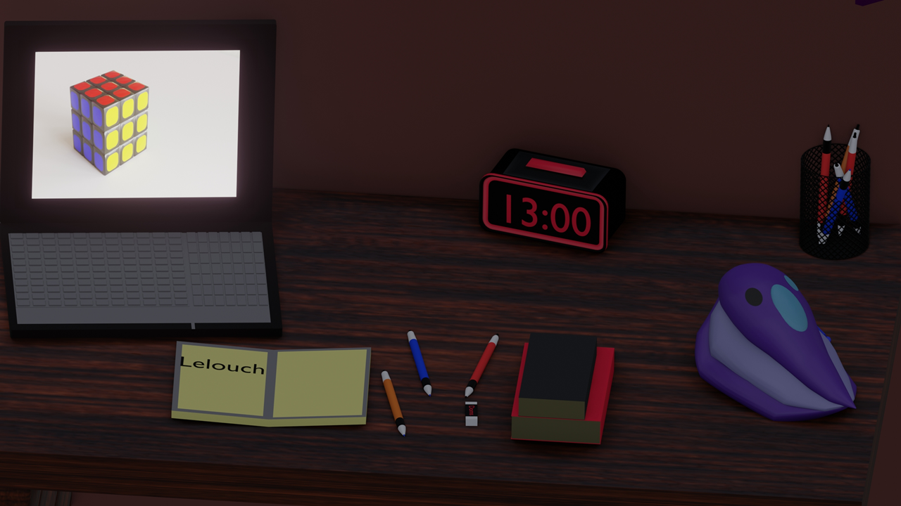
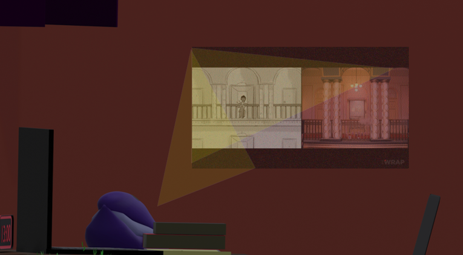
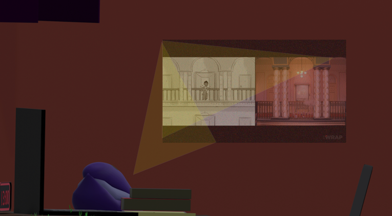
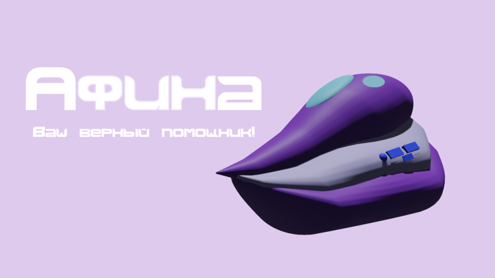

Дороненков Кирилл Design
Робот-помощник "Афина"
"Афина" - робот помощник, который должен помогать ученикам всех возрастов по учёбе.
Робот обладает обширным функционалом, звуковым и видео модулем, а также встроенной библиотекой, чтобы упростить формат обучения.
Наброски

Визуализация



Рекламный плакат

Буклет
